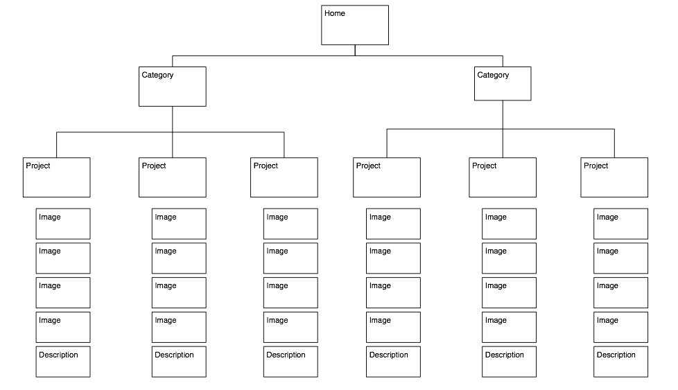

Design patterns: portfolios
The basic design problem and pattern for a portfolio

Go look at a bunch of portfolio sites online
- Look at how they deal with multiple images and descriptions inside a project
- Look at how they deal with multiple projects
- Look at how they deal with categorizing work
- Look at how users are able to navigate across categories, across projects, and across images
Find inspiration elsewhere
- Architects
- Sculptors
- Painters
- Graffiti Artists
- Multimedia-musician-artist-author-type-people